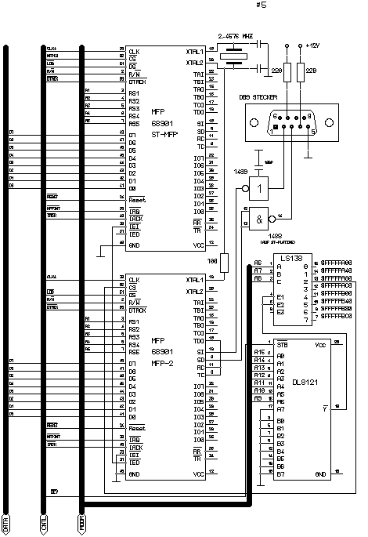

|

Die zweite MFP-Schnittstelle im Atari ST

Dieser Artikel stammt von
Andre Saischowa
Hutungstraße 4
03044 Cottbus
Anstoß für den Einbau war der Wunsch nach einer
zusätzlichen seriellen Schnittstelle an meinem Mega ST. Dabei
sollte die MIDI - ACIA nicht umgebaut werden. Ich endschied mich
für den einfachsten Weg und baute eine zweite MFP ein, da
dafür schon ein Vorbild vorhanden war (ATARI TT). Außerdem
kann man sie Huckepack auf die schon Vorhandene auflöten. Als
Abfall stehen einem noch die 8 I/O-Leitungen und die Timer zur
Verfügung. Die Adressdekodierung kann natürlich auch auf
andere Art und Weise erfolgen. Das Signal /dev steht an der GLUE Pin
25 zur Verfügung. Beim Einbau ist zuerst Pin 34 (/IEI) am ST-MFP
zu unterbrechen. In der Daisy chain des MFP-Interrupt liegt die neue
MFP in der Priorität vor dem alten 68901, genauso wie im TT. Dann
wird der neue 68901 auf dem alten aufgelötet. Es werden folgende
Pins gelötet:
1 R/W
2 A1
3 A2
4 A3
5 A4
6 A5
11 Vcc
21 /reset
32 /irq
35 clk
36 GND
37 D0
38 D1
39 D2
40 D3
41 D4
42 D5
43 D6
44 D7
45 /iack
46 /dtack
47 /ds

Abbildung 1 - Eine zweite MFP-Schnittstelle im Atari ST
Alle anderen Pins müssen vorher hochgebogen werden. Da die
zweite serielle Schnittstelle nur das Xon/Xoff-Protokoll beherrschen
soll kommt man mit jeweils einem Leitungstreiber für Ein- und
Ausgang aus. Für den Ausgangstreiber kann man den ungenutzten
Vorhandenen benutzen. Für den Eingang kann man einen 1489
einbauen, einfacher gehts mit einer Schaltung mit einem Transistor,
welche für den gewünschten Zweck ausreicht.
Die Software installiert die Schnittstelle im Betriebssystem.
Daher sollte sie im Autoordner liegen, kann jedoch auch
nachträglich gestartet werden. Da sie in die Bconmap-Struktur
eingebunden wird läuft sie erst ab TOS 2.06. Getestet wurde sie
im ROM-TOS und im TOS als RAM-Version. Benutzen kann man die
Schnittstelle z.B unter MiNT bzw. MultiTOS. Sie wird als U:\dev\modem2
angesteuert. Hat man einen Terminal angeschlossen kann man durch
Eingabe von mintshel > u:\dev\modem2 < u:\dev\modem2 die
Ein/Ausgabe der Shell auf das Terminal umleiten.
Da RUFUS die Schnittstellen direkt anspricht gibt es leider
Schwierigkeiten, da orginalerweise die Schnittstelle mit der
Bconmap-Nummer7 im SCC liegt, daher natürlich Bomben. Ich halte
es sowieso nicht für günstig, die Hardware direkt durch das
Programm zu steuern, dafür ist das Betriebssystem zuständig.
Daher sollte man die zugegebenermaßen fehlerhaften Routinen im
TOS durch Patches korrigieren und die Schnittstellen über die
GEMDOS - Funktionen ansteuern. Vieleicht gibt es auch mal eine RUFUS -
Version, welche das Vorhandensein der Schnittstellen selbst testet und
sich entsprechend verhält. Über eine solche Version
würde ich mich freuen, sie kann an folgende Adresse geschickt
werden:
Andre Saischowa
Hutungstraße 4
03044 Cottbus
P.S. Beim Orginalnachbau bitte die Selektleine $FFFFFAC0 nicht
für andere zusätzliche Hardware benutzen, daran hängt
mein Transputerlink. Falls Interesse an der hardwaremäßigen
Realisierung deselben kann man mir ja mal schreiben. Der Treiber ist
kompatibel zu der c`t - Veröffentlichung zum ALIA-Link. Ich bin
auch immer an Transputersoftware interessiert.
Anmerkung: Den passenden Treiber finden Sie im Ordner: PROGRAM
|